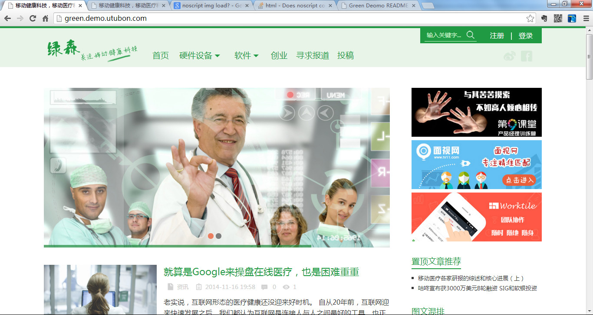

现在把你想象成你将来的一个网站读者，你想在你的网站看到什么？没错，本节就是向读者展示他将看到的页面。

想体验往下滑动的感觉，点击http://green.demo.utubon.com进入测试站体验。
评论列表的显示，你可以点击http://green.demo.utubon.com/3120.html体验。
底部通过小工具，显示的内容后台完全可以控制。

进入http://green.demo.utubon.com点击右上角的“登录”“注册”按钮测试，注意，每天只能注册一个用户，因此记住你的登录信息。哦，对了，为了凸显专业性，要求必须用邮箱登录。

投稿是主题默认就有的，后台设置好之后，就可以用，完全免费哦。
还有更多细节，你可以到http://green.demo.utubon.com注册、登录、投稿自己测试哦。